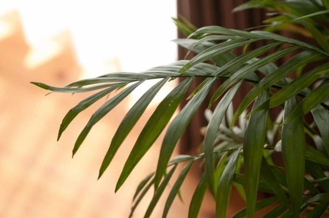

木の家の味わい
こんにちは。富山で自然素材にこだわるホンモノの家、フジ創アイノスです。 戸建住宅のほとんどは木造で建てられています。 森で育った木材が伐り出されて、住宅の構造材となります。 自然が生み出した木材は、実は住宅の構造用の材料
続きを読む →FUJISOU AINOS JOURNAL
家づくりのこと、暮らしのこと。
日々の想いを、お伝えします。
新しい記事から 33・40ページ
こんにちは。富山で自然素材にこだわるホンモノの家、フジ創アイノスです。 戸建住宅のほとんどは木造で建てられています。 森で育った木材が伐り出されて、住宅の構造材となります。 自然が生み出した木材は、実は住宅の構造用の材料
続きを読む →こんにちは。富山で自然素材にこだわるホンモノの家、フジ創アイノスです。 多くの住宅会社は、床に板張りのフローリングを使っています。 このフローリングには、木の様に見えても自然素材とは言えない建材もあります。 例えば紙に木
続きを読む →
こんにちは。富山で自然素材にこだわるホンモノの家、フジ創アイノスです。 今回はフジ創アイノスのモデルハウスをご紹介します。 北欧風のアンティークな内装で、とてもかわいいお家です。 室内は無垢床、しっくい壁の自然素材でつく
続きを読む →
こんにちは。富山で自然素材にこだわるホンモノの家、フジ創アイノスです。 今日も高岡市は湿度90％を超えています。 体調管理に注意してくださいね。 湿度が高いと、気温が低くても蒸し暑く感じます。 人が暑い、寒いと感じる体感
続きを読む →
こんにちは。富山で自然素材にこだわるホンモノの家、フジ創アイノスです。 連日大雨で、とても蒸し暑いですね。 今日の高岡市の湿度は90％だそうです。 健康のため室内の湿度調節に気を付けましょう。 フジ創アイノスのつくる家の
続きを読む →
こんにちは。富山で自然素材にこだわるホンモノの家、フジ創アイノスです。 家の価格を抑えるためには、 出来るだけ家をコンパクトにすることが重要なポイントとなります。 とはいえいざマイホームを建てるとなると、 たくさんの希望
続きを読む →
こんにちは。富山で自然素材にこだわるホンモノの家、フジ創アイノスです。 高岡市江尻にあるフジ創アイノスのショールームでは、予約制の無料相談会を開催しています。 かわいいショールームで家づくりのお悩みを相談してみませんか？
続きを読む →
こんにちは。富山で自然素材にこだわるホンモノの家、フジ創アイノスです。 家づくりの際、住宅会社えらびはとても重要です。 ✔将来のことまで考えた資金計画をしてくれるのか ✔住宅ローンを銀行に丸投げしないか ✔家の価格につい
続きを読む →
こんにちは。富山で自然素材にこだわるホンモノの家、フジ創アイノスです。 今回は『土地探し』についてお伝えしていきます。 土地探しでは、 まず土地購入のためには一体どういう経費が 別途でかかるのかを把握することから始めまし
続きを読む →こんにちは。富山で自然素材にこだわるホンモノの家、フジ創アイノスです。 前回は住宅ローンについてお話ししました。 続いて、家づくりにかかる諸経費について お伝えしていきますね。 諸経費とは、住宅ローンを借りる時の銀行経費
続きを読む →こんにちは。富山で自然素材にこだわるホンモノの家、フジ創アイノスです。 前回まで、家づくりは資金計画から始める必要性についてお話ししました。 理想の家づくりのためにとても大切です。 まず考えていただきたいことが 『住宅ロ
続きを読む →こんにちは。富山で自然素材にこだわるホンモノの家、フジ創アイノスです。 前回に続き、資金計画に失敗する3つ目の理由の、 『そもそも家に掛ける費用を間違えてしまっている』 について考えていきます。 家づくりで最も大切なこと
続きを読む →
こんにちは。富山で自然素材にこだわるホンモノの家、フジ創アイノスです 「家の中からでも参加できる」 本日はWoman Wonder Laboさん主催のオンラインマルシェが開催され 講師の方やお店の方がウェブ店舗として参加
続きを読む →こんにちは。富山で自然素材にこだわるホンモノの家、フジ創アイノスです。 前回紹介した、 資金計画で失敗する３つの理由 について、詳しく考えていきます。 まずは１つ目の理由、 『土地と建物以外の費用について、具体的に計算出
続きを読む →こんにちは。富山で自然素材にこだわるホンモノの家、フジ創アイノスです。 前回、家づくりは資金計画から、とお話しました。 この理由は、 『お金の不安なく安心して暮らし続けていただくため』 です。 『資金計画』がしっかりして
続きを読む →こんにちは。富山で自然素材にこだわるホンモノの家、フジ創アイノスです。 初めての経験となる家づくりでは、 『家を持っても本当に大丈夫なのか？』 『住宅ローンをずっと払い続けていけるのだろうか？』 『予算はどれくらいが普通
続きを読む →
こんにちは。富山で自然素材にこだわるホンモノの家、フジ創アイノスです。 最近は梅雨らしく、気温は低くても湿度が高くてなんとも蒸し暑いですね。 前回、湿度が高すぎると健康を害するというお話をしました。 過ごしやすい湿度は4
続きを読む →こんにちは。富山で自然素材にこだわるホンモノの家、フジ創アイノスです。 今日は6月21日、父の日ですね。 素敵なプレゼントを用意して、日頃の感謝を伝え家族で過ごす方も多いと思います。 今年は父の日のギフトに、涼しいマスク
続きを読む →こんにちは。富山で自然素材にこだわるホンモノの家、フジ創アイノスです。 前回までのお金についての基本知識を踏まえて、 これからの家づくりの考え方 についてお話します。 これから日本が迎える社会は、少子化であり超高齢化社会
続きを読む →こんにちは。富山で自然素材にこだわるホンモノの家、フジ創アイノスです。 前回の続きで、お金についての基本知識のお話です。 ▼住宅ローンは単利？複利？ 金利は預ける時も借りる時もついてくるものですが、 借金の中で最も大きい
続きを読む →こんにちは。富山で自然素材にこだわるホンモノの家、フジ創アイノスです。 ついに特別定額給付金が順次振り込まれはじめましたね。 今回は大切な「お金」についてお話しします。 計画的にお金を増やしていくには、自分の収入を上げる
続きを読む →こんにちは。富山で自然素材にこだわるホンモノの家、フジ創アイノスです。 今回は前回の続きの、日当たりのいい土地、悪い土地に関するお話です。 北、東、西に道路が接している土地は、なんだか日当たりが悪そうな気がします。 この
続きを読む →こんにちは。富山で自然素材にこだわるホンモノの家、フジ創アイノスです。 土地探しを始めるとき、土地に求める条件はなんでしょうか？ 子供が通う学校区であること 利便性が高い場所であること 庭がつくれるぐらいの広々した土地で
続きを読む →
こんにちは。富山で自然素材にこだわるホンモノの家、フジ創アイノスです。 家づくりをする時、住宅ローン、火災保険、登記といった諸経費に けっこうな費用がかかりますが、これ以外にも様々な経費がかかります。 まず "地盤改良工
続きを読む →